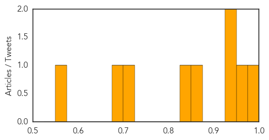

Dengue Fever
30-Day Web Trend
1 alerts, 0 warnings

30-Day Twitter Trend
0 alerts, 2 warnings

Article Locations

Article Confidences
Top Articles:
- 0.996
- China's Guangdong Province Confirms 1,380 New Dengue Cases
- 0.975
- Are mosquitoes the key to curbing disease? — SOS Children
- 0.943
- Dengue cases may be 4 times more common than known
- 0.930
- Australia records its first dengue case in 70 years
- 0.856
- Dengue cases rise by 32% in one week
- 0.849
- Dengue larva found at 8 places but MC issues no challan
- 0.706
- 20 DMCH students down with dengue
- 0.691
- Gov't to strengthen countermeasures against infectious diseases ‹ Japan Today
- 0.569
- Blame game continues
Top Tweets:
- 0.559
- Flavivirus news: Dengue epidemic: 11 new cases found - Times of India: Dengue epidemic: 11 new ... http://t.co/lyC8KtS2DR pathogenposse
Chikungunya
30-Day Web Trend
0 alerts, 2 warnings

30-Day Twitter Trend
1 alerts, 0 warnings

Article Locations

Article Confidences

Top Articles:
- 0.994
- Mosquito-Borne Chikungunya Virus Likely to Reach Mexico: Health Ministry
- 0.994
- Mosquito-borne Chikungunya virus likely to reach Mexico- health ministry
- 0.993
- Mosquito-borne Chikungunya virus likely to reach Mexico- health ministry
- 0.866
- Jamaican PM calls for combating Chikungunya virus
- 0.635
- KSAC to Deploy Volunteers in Education Drive Against CHIK-V
- 0.592
- Jamaica reports chikungunya related death in college student, Health Minister Ferguson wants to be infected
Top Tweets:
-
No tweets found for Oct 15, 2014